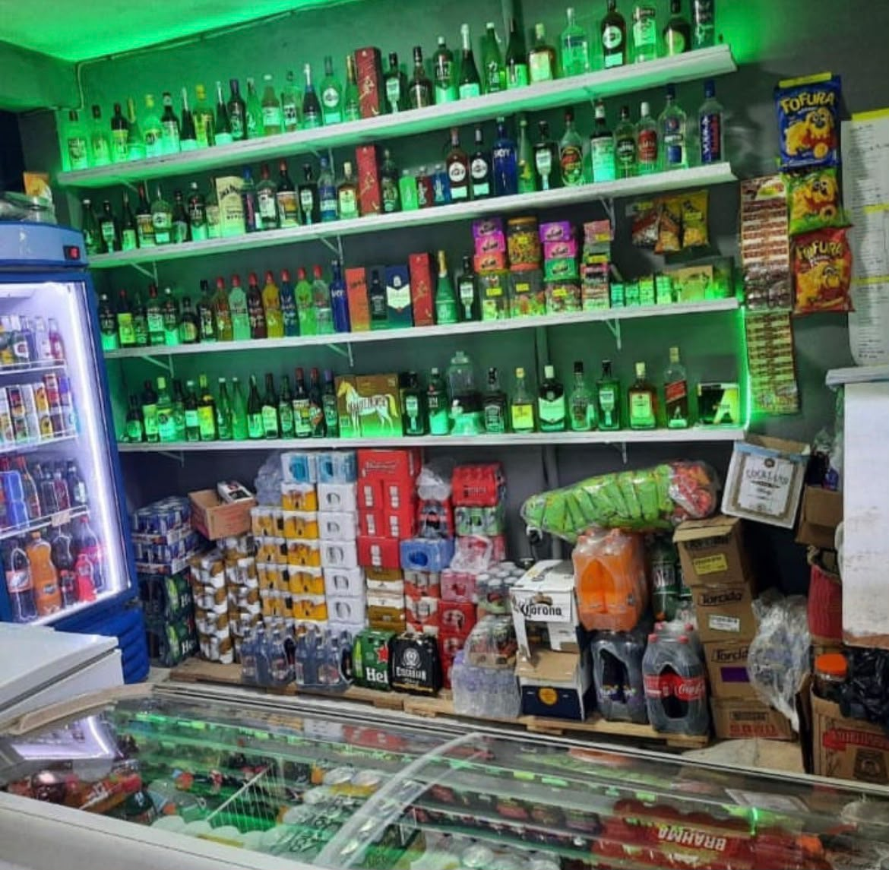
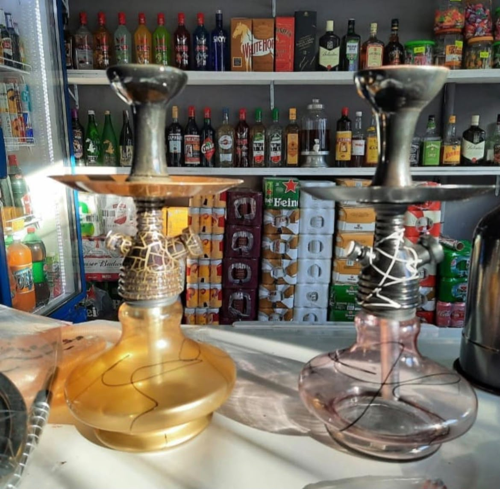
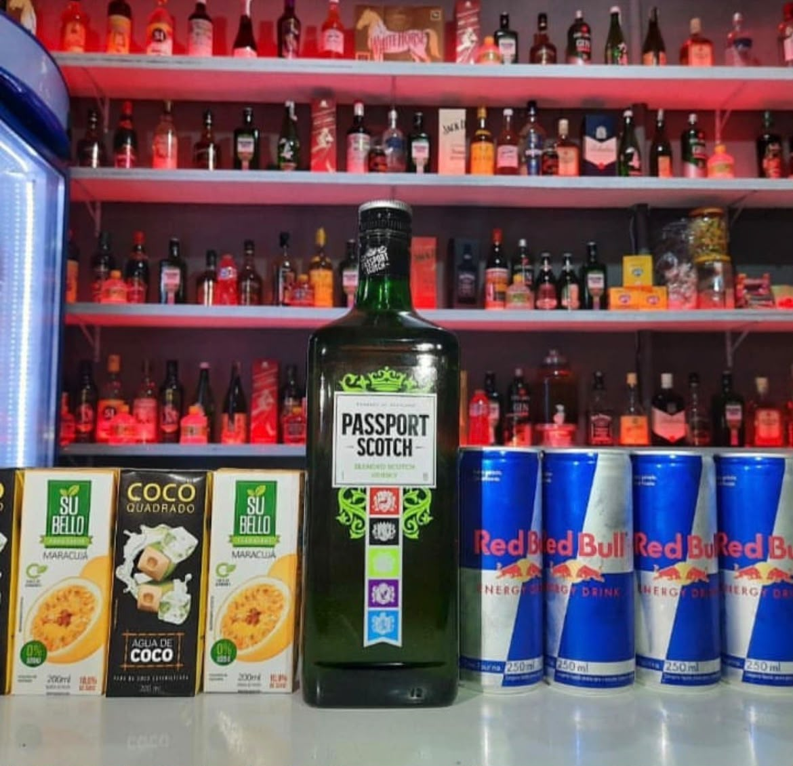

Adega do Bahia
Bebidas geladas, atendimento de qualidade e os melhores preços da região!



Tudo o que você precisa para o seu evento ou final de semana:
- Bebidas Geladas: Cervejas, destilados, whiskies, vinhos e espumantes
- Combos & Copos: Caipirinhas de frutas, doses especiais e gelo de coco
- Tabacaria & Narguilé: Essências, carvão de narguilé e acessórios
- Churrasco: Carvão para churrasco e encomendas para eventos
- Retirada no Local: Atendimento direto na loja (não fazemos entregas)
Endereço para Retirada:
📍 R. Quatro de Julho, 55 - Vila Santa Teresinha
Falar com a Adega no WhatsApp